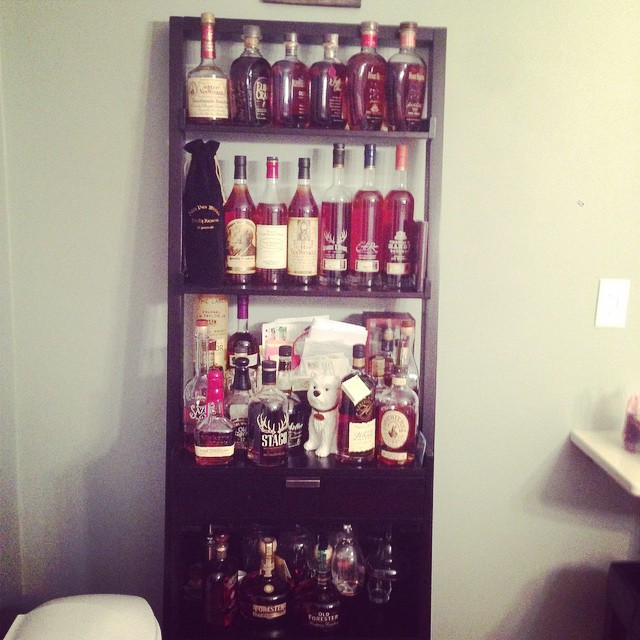
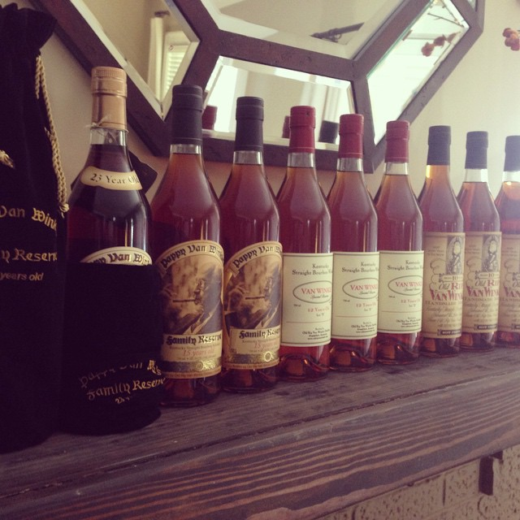
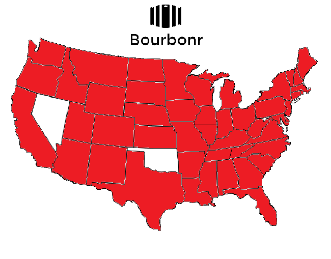
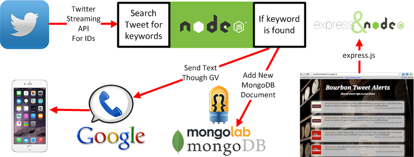
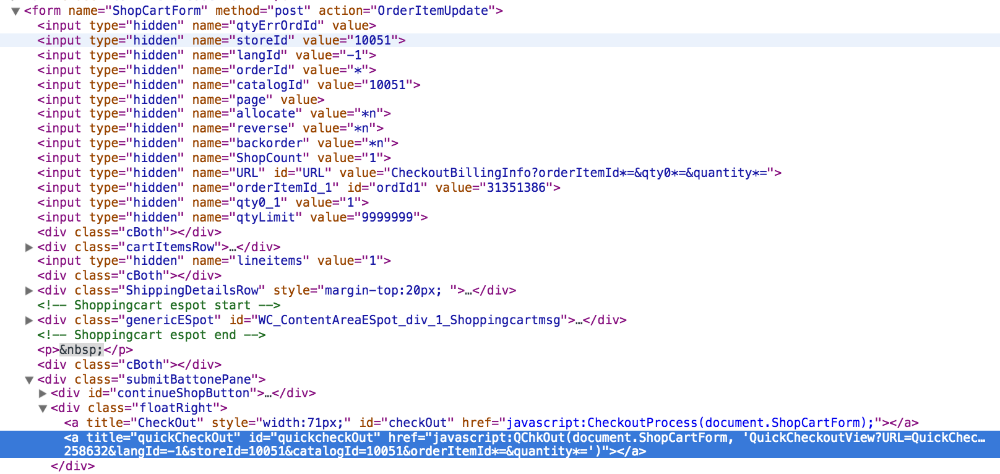
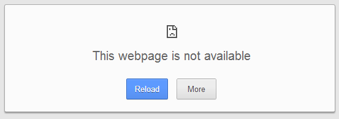

How I Became a Bourbon Sniper
Tell-All From A Bourbon Hunter
Who's Kenny

the showcase
 not including the 65 bottles in the basement...
All bourbon is whiskey is but not all whiskey is bourbon.
Bourbon Facts
- Bourbon is America’s only native spirit, as declared by Congress in 1964
- 51% corn. Other grains such as rye, wheat and barley malt are used in combination
- Aged in charred new white oak barrels
- Begin aging at no higher than 125 proof, and bottled between 80-160 proof
- No artificial flavors can ever be added (char and weather)
- To be called “straight bourbon” it must be aged for atleast 2 years.
Bourbon Fun Facts
95% of the world’s production is within 1 hour of Louisville.
The perfect natural mix of climate, conditions and pure limestone water
There are more barrels of bourbon aging in Kentucky than there are people
5.0 vs 4.3
Yeast Strains Are Proprietary
Four Roses is the only one to publish recipes
Angel's Share
180-220 bottles
Bottled in Bond
considered the first consumer protection law.
- 100 Proof
- 1 Distiller
- 1 Location
- 1 Production Run
- Minimum 4 years
- Bonded Warehouse
Buffalo Trace & Eagle Rare use the same mashbill and barrel types
The defining difference is the position of the barrel in the rickhouse as it ages
Eagle Rare matures near the ground where it is cooler, darker and moist. Buffalo Trace ages a couple stories higher where temperatures fluctuate more. The differing positions have a part in defining their flavor and character
The defining difference is the position of the barrel in the rickhouse as it ages
Eagle Rare matures near the ground where it is cooler, darker and moist. Buffalo Trace ages a couple stories higher where temperatures fluctuate more. The differing positions have a part in defining their flavor and character
read the label on any rye
Your ‘Craft’ Rye Whiskey Is Probably From a Factory Distillery in Indiana
- Templeton Rye
- Willett
- Breaker Bourbon
- WhistlePig Rye
- Angel’s Envy Rye
- Bulleit Rye
- George Dickel Rye
- Redemption Bourbon & Rye
- Smooth Ambler
- High West
- And more!
some of the best bourbons on the market (to me)
How To Acquire Rare Bourbon
this is where you take notes...
The Easy Way
- become friends with liquor store owners
- or even better, distributors!
- spend lots of money at one location
- get lucky at a raffle
The Stalker Way
- call call call
- figure out the delivery schedule for liquor stores
- follow those trucks on delivery day
The Crazy Way
- start camping out early
- after you get your bottle, circle the line or haul ass to another store
- drive to neighboring cities if they haven't released...and camp out there
The Social Way
- Search for #pappyvanwinkle on twitter
- Follow liquor stores on twitter & facebook
- follow @PappyTracker on twitter
- follow bourbonr.com's Pappy Release Tracker

The Social Hacking Way

var mongoose = require('mongoose'),
Twit = require('twit'),
es6 = require('es6-shim'),
voicejs = require('voice.js');
var stream = T.stream('statuses/filter', {
follow: ['216442829', '111214853', '16066889', '40448079']
});
var keywords = ['bourbon', 'whiskey', 'whisky', 'rye', 'buffalo',
'parkers', "parker's", 'weller', 'sazerac', 'eagle', 'rare',
'w.l.', 'sour mash', 'pappy', 'winkle', 'elijah', 'btac', 'stagg',
'thomas', 'handy', 'four', 'roses'];
stream.on('tweet', function (tweet) {
if (tweet.retweeted_status == undefined){
if (tweet.in_reply_to_screen_name == null){
keywords.forEach(function(keyword) {
if (tweet.text.includes(keyword) == true ||
tweet.text.includes(keyword.toUpperCase()) == true ||
tweet.text.includes(keyword.capitalizeFirst()) == true){
gvclient.sms({ to: my_number, text: tweet.user.screen_name + ': '
+ tweet.text}, function(err, res, data){
});
mongoose.model('Tweet').create({
body: body,
tweetid : tweetid,
avatar: avatar,
screenName: screenName,
}, function (err, tweetid) {
})
}
})
}
}
})
and then i learned about...
ABC States
For some of the ABC states, you can buy online!
However, there is a catch!
- CC with a billing address in that state
- Have your package shipped to someone within the state
But here’s the thing...
you’re not the only one doing this.
It’s all about speed!
- scrape at random intervals
- may have to do IP masking
- be aware of their Terms of Service
- be a good web citizen and respect the wishes of the site's owners.
Plus, if bourbon isn't your thing then there are plenty of other things you can use this to snipe for.
- tickle me elmo
- beanie babies
- more stuff
pappysite = SiteDatum.find(1)
mechanize = Mechanize.new
mechanize.user_agent_alias = 'Mac Safari'
page = mechanize.get('http' + site)
pappy = ['Winkle', 'Pappy', 'Van'].any? {
|keyword| page.parser.css('.s_leftContainer').text.include? keyword
}
if pappy == true
pappysite.pappy = true
pappysite.touch
pappysite.save
if pappysite.ordersubmitted == false
pappysite.ordersubmitted = true
pappysite.save
...
end
else
pappysite.pappy = false
pappysite.touch
pappysite.save
end
order_liquor(ENV["KENNY_ACCOUNT1_EMAIL"], ENV["KENNY_ACCOUNT1_PW"])
sleep(1)
order_liquor(ENV["KENNY_ACCOUNT2_EMAIL"], ENV["KENNY_ACCOUNT1_PW"])
def self.order_liquor(userlogin, userpassword)
Thread.new{
#To create multithreaded processes, we need a new object for mechanize and Watir
mechanize = Mechanize.new
mechanize.user_agent_alias = 'Mac Safari'
order_liquor_login_addtocart(mechanize, userlogin, userpassword)
}
end
def self.order_liquor_login_addtocart(mechanize, userlogin, userpassword)
#Go to the login page and submit the login form
login_page = mechanize.get('ABC Login Site')
login_form = login_page.form_with(:name => 'Logon')
login_form['logonId'] = userlogin
login_form['logonPassword'] = userpassword
login_button = login_form.button_with(:id => 'loginButton')
loggedin_page = login_form.submit(login_button)
STDOUT.write "Successfully Logged In as " + userlogin.to_s + " with Mechanize\n"
...
...
#Get the list of all the bourbons and search for keywords
#and add them to the cart via POST forms.
list = mechanize.get('https' + BourbonList)
list_array = bourbon_list.search("//table[@id='productList']")
list_array.each_with_index do |list_item, index|
if ["Pappy Van Winkle’s", "Van Winkle Special Reserve"].any? {
|keyword| list_item.content.include? keyword
}
form = list.form_with(:name => 'OrderItemAddForma' + index.to_s)
form.action = "OrderItemAdd"
results_page = form.submit
STDOUT.write "Item Added to Cart for " + userlogin.to_s + "\n"
end
end
end
no flipping back and forth between adding items to cart!
and then... javascript :(
Watir
is a really good higher level abstraction that uses the Selenium WebDriver
https://github.com/watir/watir/
“Watir-webdriver is a modern version of the Watir API based on Selenium. Selenium 2.0 (selenium-webdriver) aims to be the reference implementation of the WebDriver specification. In Ruby, Jari Bakken has implemented the Watir API as a wrapper around the Selenium 2.0 API. Not only is Watir-webdriver derived from Selenium 2.0, it is also built from the HTML specification, so Watir-webdriver should always be compatible with existing W3C specifications.” --Wikipedia
order_liquor(ENV["KENNY_ACCOUNT1_EMAIL"], ENV["KENNY_ACCOUNT1_PW"])
sleep(1)
order_liquor(ENV["KENNY_ACCOUNT2_EMAIL"], ENV["KENNY_ACCOUNT1_PW"])
def self.order_liquor(userlogin, userpassword)
Thread.new{
#To create multithreaded processes, we need a new object for mechanize and Watir
mechanize = Mechanize.new
mechanize.user_agent_alias = 'Mac Safari'
#We need Watir to click on JS links :(
#This will only take a few second. We are running Headless with phantomjsWatir.default_timeout = 120
browser = Watir::Browser.new :phantomjs
order_liquor_login_addtocart(mechanize, userlogin, userpassword)
order_liquor_login_watir(browser, userlogin, userpassword)
order_liquor_quickcheckOut(browser, userlogin)
order_liquor_submitorder(browser, userlogin)
browser.close
}
end
def self.order_liquor_login_watir(browser, userlogin, userpassword)
#Login to the site
browser.goto ABCLoginSite
browser.text_field(:name => 'logonId').set userlogin
browser.text_field(:name => 'logonPassword').set userpassword
browser.link(:id => 'loginButton').click
browser.div(:id => "accountInfo").wait_until_present
STDOUT.write "Successfully Logged In as " + userlogin.to_s + " with Watir\n"
end
def self.order_liquor_quickcheckOut(browser, userlogin)
#Go to the checkout cart and click on "Quick Checkout Option"
browser.goto "ABCCheckOutPage"
Watir::Wait.until { browser.title == "Shopping cart" }
browser.link(:id => 'quickcheckOut').click
Watir::Wait.until(15) { browser.title == "Checkout Order Review" }
end
and this is where it bombed...
def self.order_liquor_quickcheckOut(browser, userlogin)
begin
browser.goto "ABCCheckOutPage"
Watir::Wait.until { browser.title == "Shopping cart" }
browser.link(:id => 'quickcheckOut').click
Watir::Wait.until(15) { browser.title == "Checkout Order Review" }
rescue
vintages = ["23 Year Old", "20 Year Old", "15 Year Old","12 Year Old", "10 Year Old", "13 Year Old"]
vintagetest = vintages.any? {
|vintage| browser.span(:class => 'normalTextDarkRed').text.include? vintage}
if vintagetest == true
vintages.each do |vintage|
if browser.span(:class => 'normalTextDarkRed').text.include? vintage
clear_item_in_cart(browser, vintage, userlogin)
end
end
retry
end
end
def self.clear_item_in_cart(browser, removeitem, userlogin)
cart_rows = browser.divs(:class => 'colimn_Description').collect{ |x| x.text}
cart_rows.each do |row|
itempresent = row.include? removeitem
if itempresent == true
browser.td(:text, row).parent.parent.parent.parent.parent.link(:text, /Remove/).click
Watir::Wait.until { browser.title == "Shopping cart" }
end
end
end
Something that's even harder to plan for...

def self.order_liquor_submitorder(browser, userlogin, userphone, carrier, textmessage)
i = 0
begin
browser.link(:id => 'submitOrder').click
Watir::Wait.until { browser.title == "Order Confirmation" }
STDOUT.write "Pappy Order for " + userlogin.to_s + " is submitted!\n"
rescue
i += 1
order_screwed('order_liquor_submitorder', i, userlogin)
retry
end
end
def self.order_screwed(method, attempt, userlogin)
if attempt > 100
STDOUT.write "Tried " + method.to_s + "for the final " + attempt.to_s + " attempt. Time to kill it for " + userlogin.to_s + " \n"
exit
else
STDOUT.write " " + method.to_s + " messed up! Retry attempt: " + attempt.to_s + " for " + userlogin.to_s + " \n"
sleep(3)
end
end
Using Cloud Foundry To Run The App
clockwork.rb
require File.expand_path('../../config/boot', __FILE__)
require File.expand_path('../../config/environment', __FILE__)
require 'clockwork'
include Clockwork
every(45.seconds, 'Searching for Pappy...') { SiteDatum.scrape }
scraper goes in the model!
class SiteDatum < ActiveRecord::Base
def self.scrape
...
...
manifest.yml
---
applications:
- name: pappy
memory: 128MB
instances: 1
domain: cfapps.io
command: bundle exec rake db:create db:migrate db:seed && bundle exec rails s -p $PORT
services:
- kcoleman-pappy-elephantsql
- name: pappycron
memory: 768MB
instances: 1
buildpack: https://github.com/ddollar/heroku-buildpack-multi.git
no-route: true
command: bundle exec clockwork lib/clock.rb
services:
- kcoleman-pappy-elephantsql
.buildpacks
https://github.com/stomita/heroku-buildpack-phantomjs.git
https://github.com/cloudfoundry/buildpack-ruby.git#f743ad3d515c0208a594300cb4eed6c665b87318
conclusion
- you're better prepared for your time in bourbon country
- you know what to look for on the shelves
- speed is first priority when scraping
- account for multiple forms of failure
- test by submitting an order, then call and cancel :)
- run it all on a PaaS to make life simple